| 日付 | 2026年6月14日（日） |
|---|---|
| 山域 | 丹沢 |
| メンバー | 単独 |
| 山行形態 | 日帰り |
| アクセス | 車 |
| ルート (Map) | 葛葉の泉駐車場 (7:29) - (8:17) 林道 - (9:00) 離渓地点 (9:07) - (9:28) 登山道 - (9:40) 三ノ塔 (9:51) - (10:06) 二ノ塔 - (11:05) 葛葉の泉駐車場 |
初めて沢登りに挑戦してみる。行先は初心者向けの沢と言われる丹沢の葛葉川。
2010年に源次郎沢に行ったことがあるが、その時は登山靴で行き、結構大変な目にあった。
今回は沢登り用のシューズを買っての16年越しの再挑戦。
元々は昨日行く予定だったが、金曜に局所的大雨が降ったので、一日ずらしての山行だ。
入渓地点の駐車場に車を停める。標高430m。
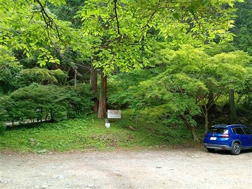
もう一組、沢登りの人がいる。準備を整えていたので、先に行くことにする。
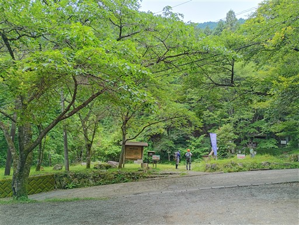
堰堤があるので、その先までは道を歩く。
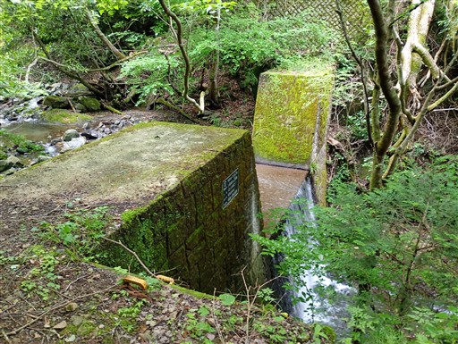
堰堤を過ぎたところから入渓。
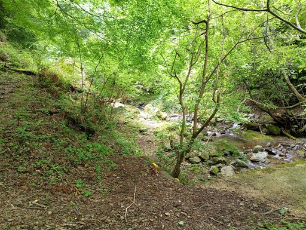
初めての本格的な沢登り。沢靴なので水の中をジャブジャブ歩いていく。
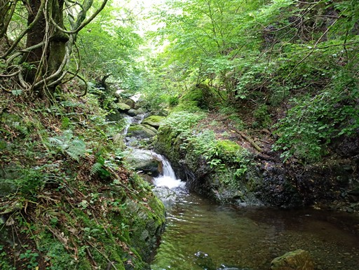
気持ちの良い水の中の歩行。水はさほど冷たくない。
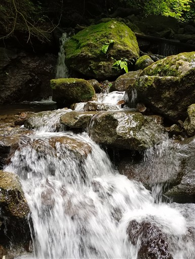
小さな滝を超える。
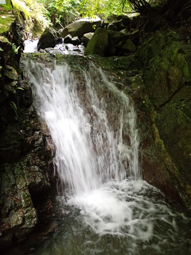
二段の滝。この辺りは楽勝。
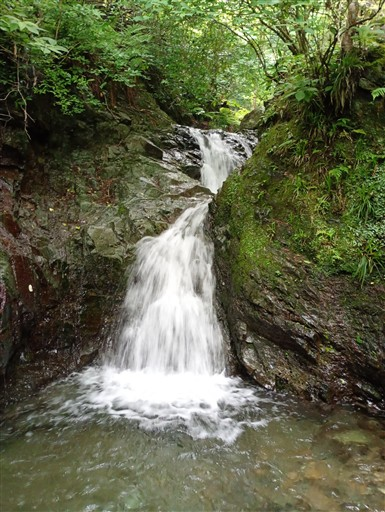
狭い岩の隙間を歩く。
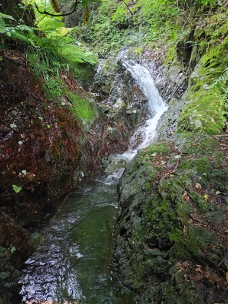
ちょっと沢が広くなる。
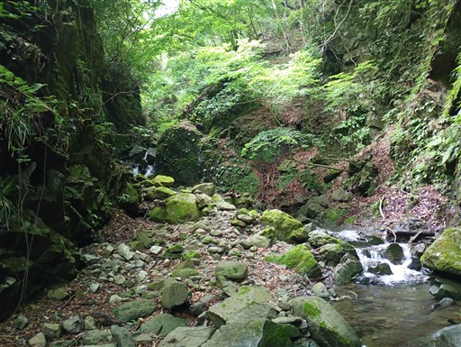
二筋の滝。上の岩が落ちてきそう。
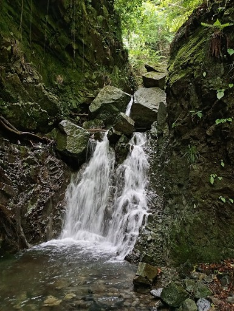
この滝は難しい。途中まで登ったが無理で、諦めて巻く。
登っていると上半身がどんどん濡れてきて、かなり焦る。
濡れることにまだ慣れていない。
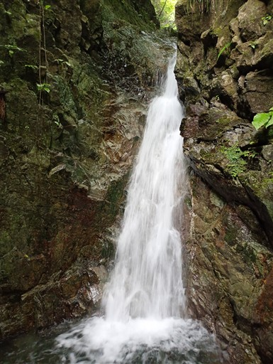
美しい沢道。
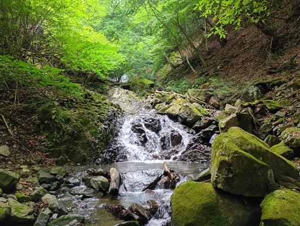
この滝は傾斜が緩くて登りやすい。
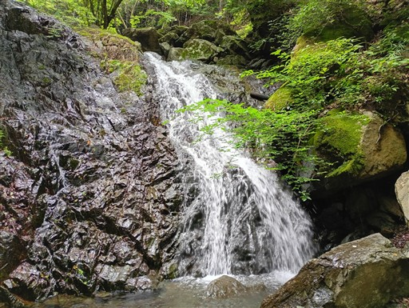
水の中をジャブジャブ歩く。
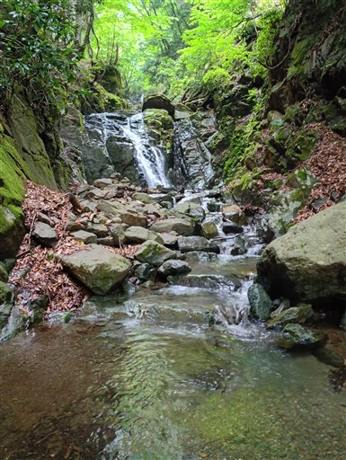
滝を直登。水がはねて結構濡れる。この滝で上半身がかなり濡れてしまった。
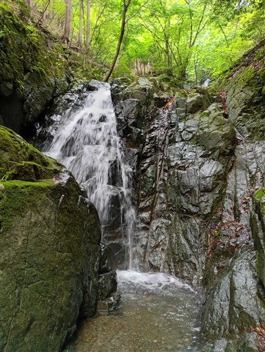
しばらく眺めたが、滝も右の岩も安全に登れそうなところが無く、この滝は巻く。
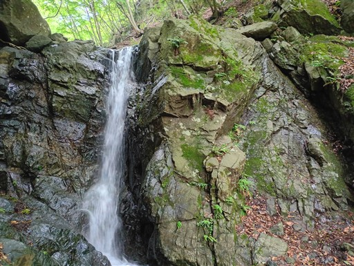
巻道は非常に歩きやすい。この辺りが初心者用の沢と言われる所以だろう。
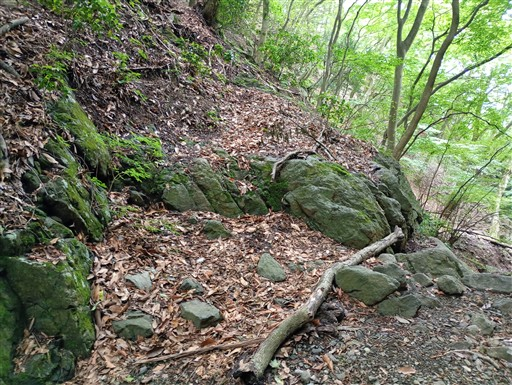
中間地点手前の最後の難所。
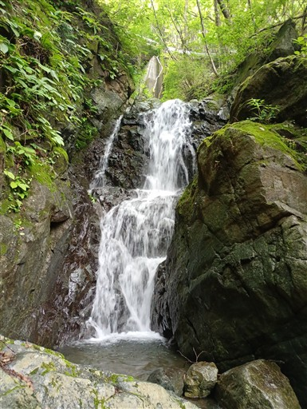
林道に到着。ここが中間地点。
記録を見ると、ここまでで沢を抜ける人の方が多い。
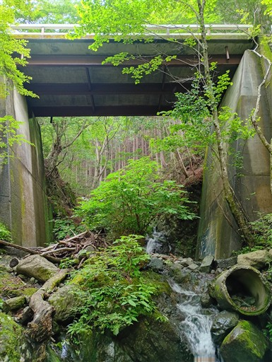
壊れた土管が植木鉢のようになっている。
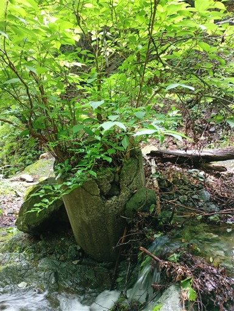
まだ体力的にも精神的にも余裕があるため、上半分も行くことにする。
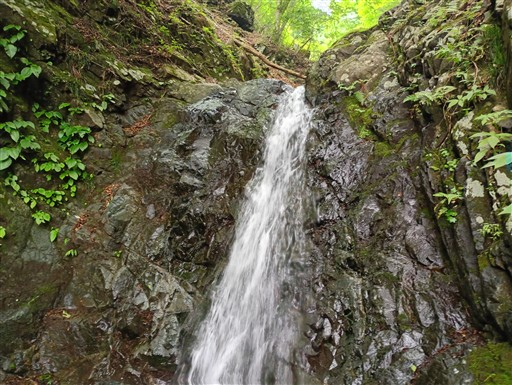
大量の花びらが沢沿いに落ちている。
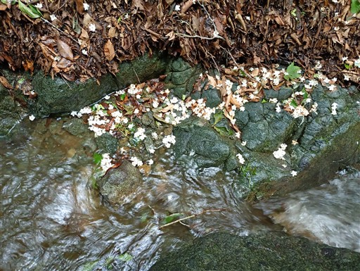
水量がだいぶ少なくなってきた。
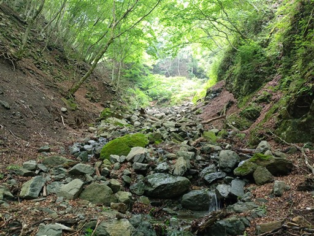
富士形の滝。右の岩を登る。傾斜は緩い。
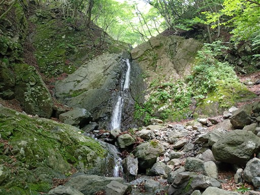
岩の表面は滑りそう。
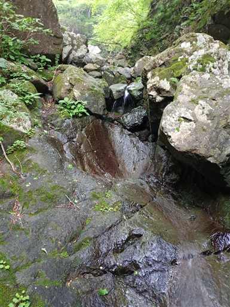
二股に到着。ここは左に行く。
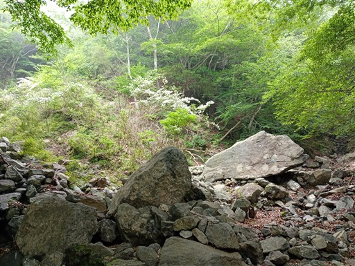
もう流れている水は僅か。でもピチャピチャ跳ねてそこそこ濡れる。
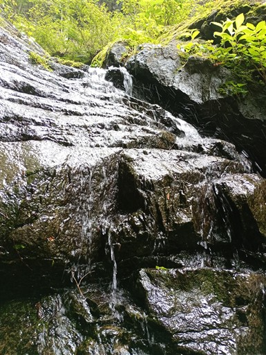
ナメ滝。少し滑るのと、手をかける場所が少なく、案外難しい。
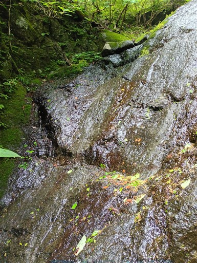
ピンクリボンがあるところで沢から脱出する。
ここで登山靴に履き替える。ヤマビルにいつ襲われるか分からず結構恐怖だ。
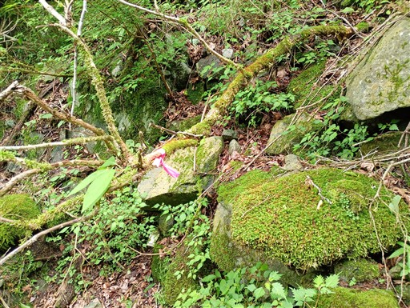
踏み跡はあるが、かなり歩きにくい。
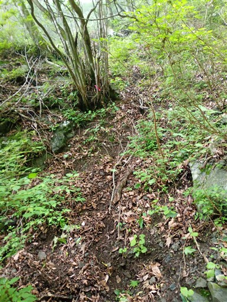
途中で踏み跡もピンクリボンも見失い、かなり悪い登りになる。
木に捕まって登っていたら、手にヤマビルがくっついていてパニックになる。
難易度が高い場所だが、足を止めることが許されなくなり、かなりきつい。
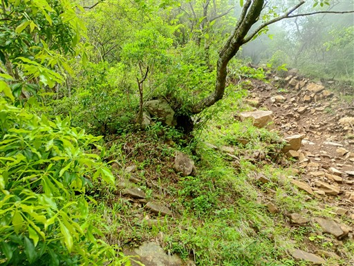
植林地帯に出てくる。ようやく歩きやすい斜面になる。
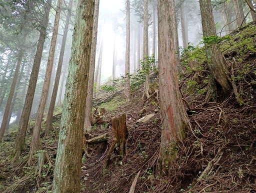
無事登山道に出てくる。
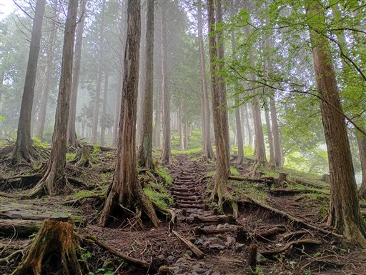
三ノ塔まで登る。標高1205m。
残念ながら雲に覆われて展望は全くない。
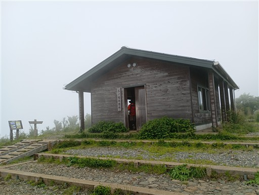
体の総チェックをしていたら、なんと膝にヤマビルがへばりついて血を吸っている。
払っても落ちない。持ってきた塩をかけるとポロリと落ちた。膝に小さな穴が開いてしまった。
なかなか血は止まらないが絆創膏で何とかなるレベルだったので、まだ吸い始めて数分だったのだろう。
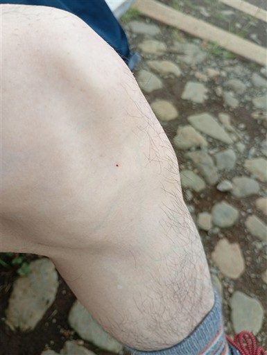
ここから二ノ塔に向かう。まだ10時前で、凄まじい数の登山者とすれ違う。
なかなか前に進まない。待っている間にヤマビルに襲われないか、気が気じゃない。
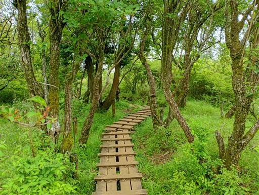
苦労してようやく二ノ塔に到着。天気は悪いのに大賑わいだ。
ここで再び体の総チェック。靴下まで脱いで確認したが、ヤマビルは付いていなかった。
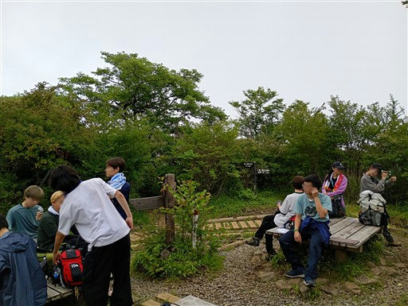
ここから二ノ塔尾根を下る。この道はほとんど誰も歩いていない。
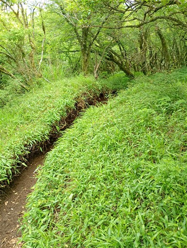
ただ淡々と下るつまらない道だ。
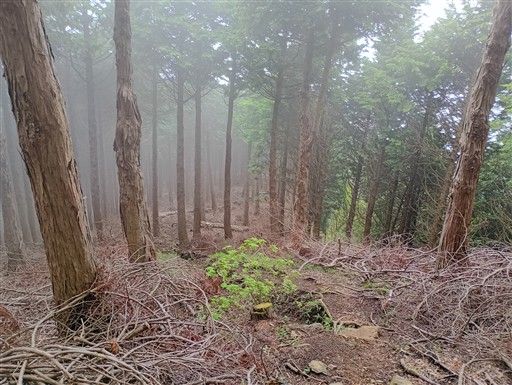
林道に出てくる。沢登りの中間地点にあった林道だ。
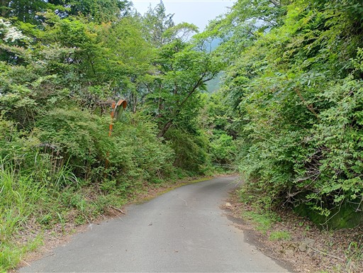
さらに下る。
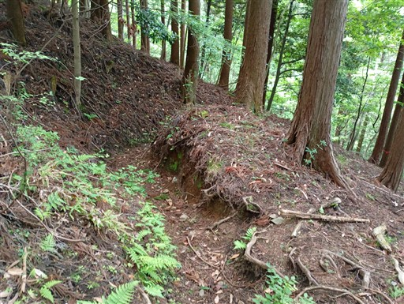
車道に下山。ここから駐車場まですぐだ。
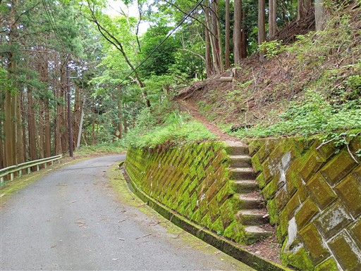
駐車場に戻ってくる。近くに名水があるようで、ポリタンクに大量に水を汲んでいる人がたくさんいる。
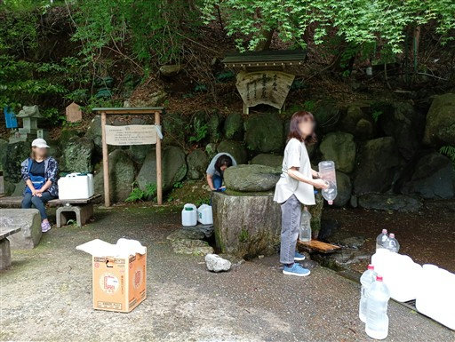
大倉に移動して「さか間」という蕎麦屋で昼食をとってから帰宅する。
無事、初めての沢登りを終えることができた。
案外難しかったという感想。2つの滝は巻いてしまった。
沢靴の滑る場所、濡れることへの慣れなど、いくつか学ぶところがあった。
少しずつステップアップしていきたい。
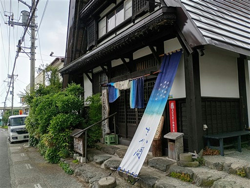